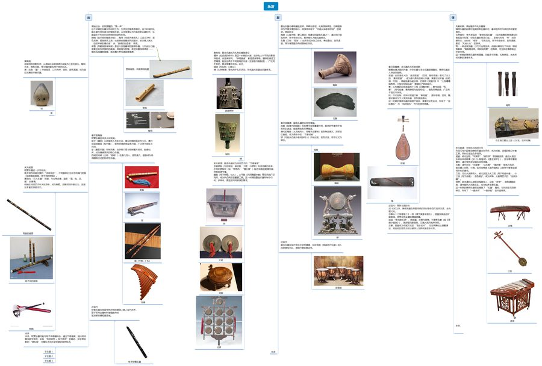
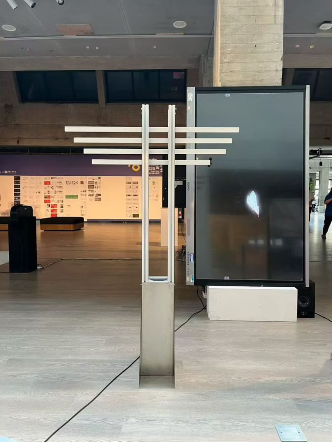
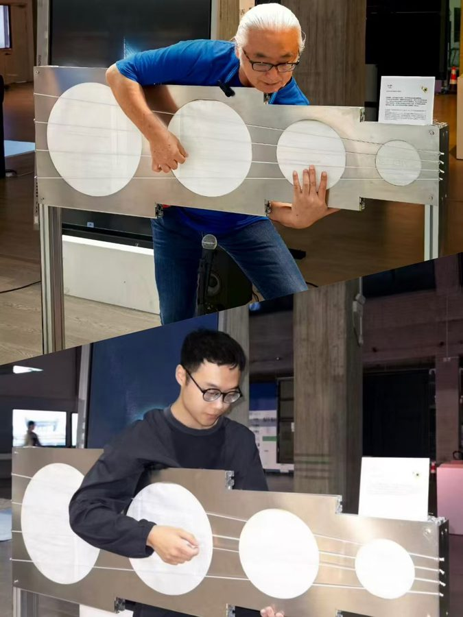
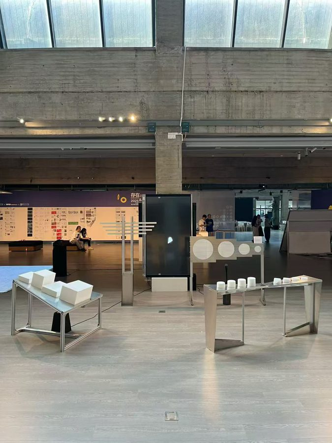
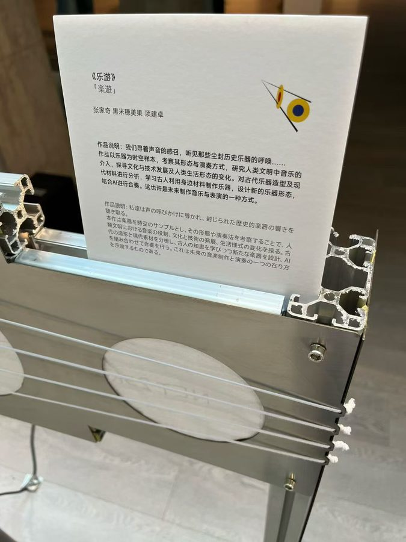
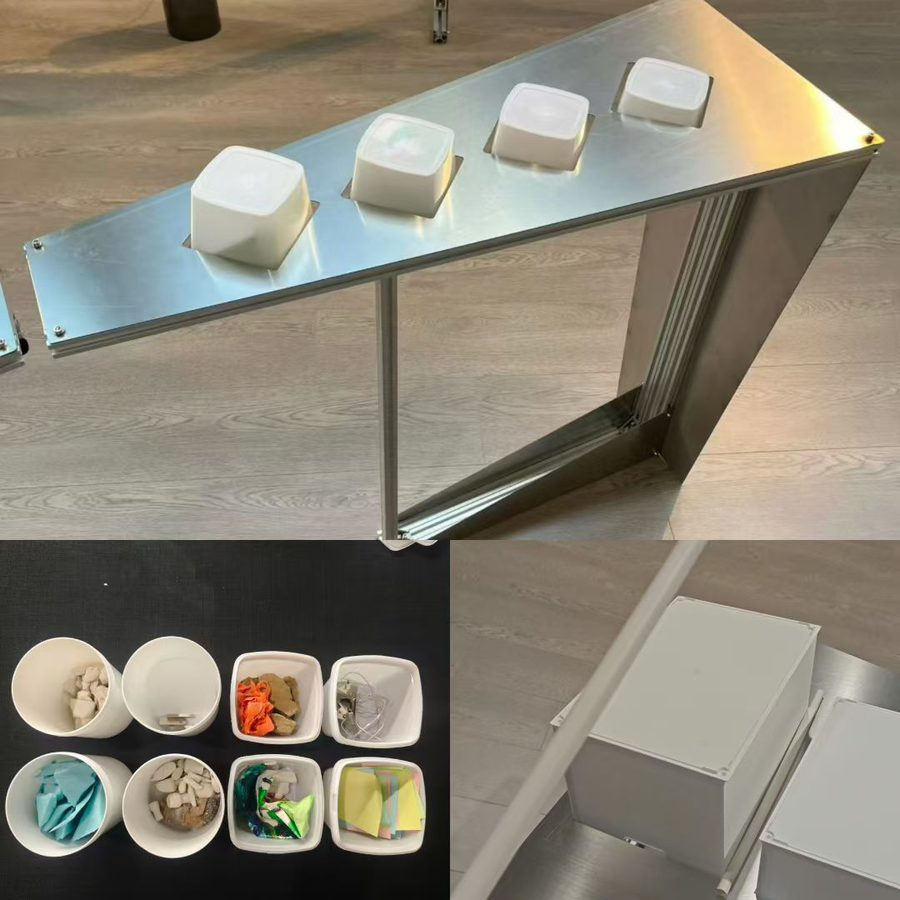
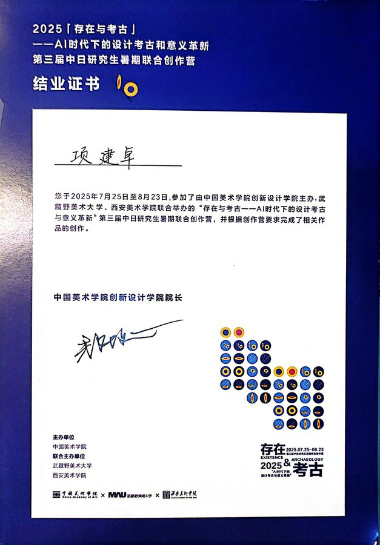

PROJECT 02
乐游
Cultural Heritage × TouchDesigner
项目角色：田野考察 · 乐器考古资料整理 · 交互概念与交互逻辑设计 · TouchDesigner 实时影像实现 —— 把「考古现场看到的乐器」翻译成观众可触碰、可聆听的交互体验。
项目角色：田野考察 · 乐器考古资料整理 · 交互概念与交互逻辑设计 · TouchDesigner 实时影像实现 —— 把「考古现场看到的乐器」翻译成观众可触碰、可聆听的交互体验。
2025 年 7–8 月，参加由中国美术学院创新设计学院主办、武藏野美术大学与西安美术学院联合举办的 第三届中日研究生暑期联合创作营，主题为「存在与考古——AI 时代下的设计考古和意义革新」。 为期一个月，与中日两国师生共同完成田野考察与联合创作。
创作营提出的问题是：当 AI 可以快速「复原」一件文物时，考古的意义还剩什么？ 我的切入点选择了乐器——它是文博展陈中少数「本该发声、却在展柜里永远沉默」的器物。 「乐游」由此出发：让乐器从被观看的对象，变成可以被触发、被听见的体验。
一个月内实地走访 9 处文博机构与民居文化现场，为乐器考古建立第一手图像与文献档案：

考察期间整理的乐器考古资料板：逐件比对馆藏实物、图像与文献，筛出可进入交互装置的器形与音色线索
要解决的核心矛盾：文物不能碰，但乐器必须被「演奏」才有意义。设计上做了三次转译——
最终形态是一组悬挂与立式的圆形交互单元阵列：观众走近、触碰，装置以影像与声音回应—— 考古资料在这里不再是展板上的说明文字，而成为可被身体记住的经验。
以 TouchDesigner 搭建实时交互系统，工程按模块拆分为开合、粒子、平吸、星幕等多个 .toe 文件并行调试， 再整合为主工程：






「乐游」让我完整走了一遍从田野到作品的路径：9 处文博机构的实地考察、乐器考古的资料整理、 交互概念的定义、TouchDesigner 实时影像的实现，最终在中国美术学院展出。 它训练的是一种把研究转译为体验的能力——这与我后来在「云鬓花颜」里做的 「考据知识库 → AI 生成」是同一条思路：先有据可查，再谈表达。